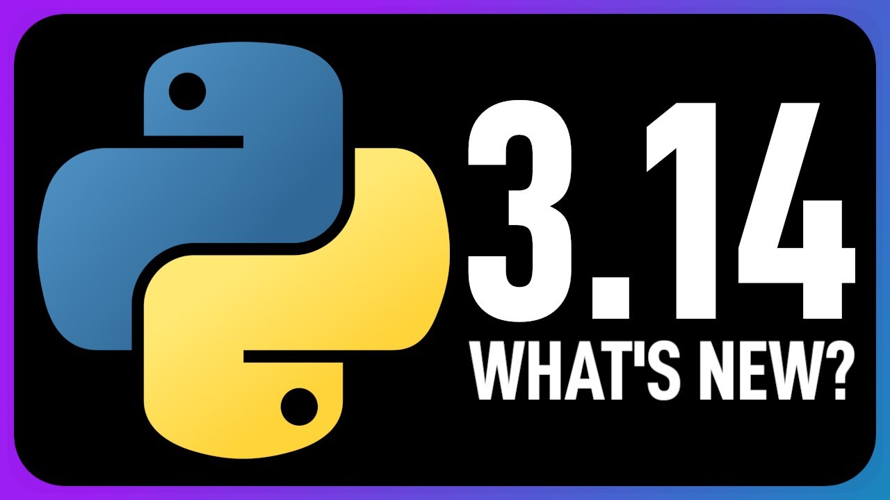

Python 3.14: The Next Evolution in Python Development

Python continues its steady march forward with the anticipated release of Python 3.14, marking another significant milestone in the language’s evolution. As the Python Software Foundation maintains its annual release cycle, Python 3.14 represents the ongoing commitment to improving performance, developer experience, and language capabilities.
Release Timeline and Development
Following Python’s established release schedule, Python 3.14 continues the pattern of annual major releases that began with Python 3.9. The development process follows the standard Python Enhancement Proposal (PEP) system, where community members propose, discuss, and refine new features before implementation.
The release represents months of collaborative work from core developers, contributors, and the broader Python community, focusing on backward compatibility while introducing meaningful improvements to the language.
Performance Enhancements
Python 3.14 builds upon the performance improvements introduced in recent versions. The development team has continued optimizing the interpreter, with particular attention to:
- Memory Management: Further refinements to Python’s garbage collection system, reducing memory overhead and improving allocation efficiency
- Bytecode Optimization: Enhanced compilation processes that generate more efficient bytecode
- Standard Library Performance: Optimizations to frequently-used modules and functions
These improvements contribute to faster execution times and reduced resource consumption, particularly beneficial for long-running applications and data-intensive workloads.
Language Features and Syntax
While maintaining Python’s philosophy of readability and simplicity, Python 3.14 introduces carefully considered language enhancements:
Type System Improvements
The static typing ecosystem continues to mature, with enhancements to type hints and better integration between runtime and static analysis tools. These improvements make it easier for developers to write type-safe code while maintaining Python’s dynamic nature.
Developer Experience Enhancements
Several quality-of-life improvements have been introduced to make Python development more efficient and enjoyable. Error messages have been further refined to provide clearer guidance, and debugging capabilities have been enhanced.
Standard Library Updates
Python’s “batteries included” philosophy remains strong in 3.14, with updates across the standard library:
- New Modules: Introduction of modules addressing modern development needs
- Deprecated Module Updates: Continued modernization of older modules while maintaining backward compatibility
- Security Enhancements: Strengthened cryptographic modules and security-related functionality
Breaking Changes and Migration
Python 3.14 maintains the project’s commitment to stability. Any breaking changes are minimal and well-documented, with clear migration paths provided. The development team continues to balance innovation with the needs of existing codebases.
Most Python 3.13 code should run without modification on Python 3.14, though developers are encouraged to review the official migration guide for any project-specific considerations.
Community Impact
The release reflects the vibrant Python ecosystem, with contributions from developers worldwide. The Python Software Foundation’s governance model ensures that changes serve the broad community while maintaining the language’s core principles.
Looking Forward
Python 3.14 sets the foundation for future developments while addressing current needs. The development team continues to explore areas such as:
- Performance optimization strategies
- Improved tooling integration
- Enhanced support for modern development practices
- Continued evolution of the type system
Getting Started with Python 3.14
Developers interested in trying Python 3.14 can download it from the official Python website. The comprehensive documentation includes migration notes, feature explanations, and examples to help developers transition smoothly.
For production environments, thorough testing is recommended before upgrading, though the Python team’s commitment to stability makes the transition process straightforward for most applications.
Conclusion
Python 3.14 represents another solid step forward for the language, balancing innovation with stability. The release demonstrates the Python community’s continued dedication to creating a language that remains accessible to beginners while powerful enough for the most demanding applications.
As Python approaches its fourth decade, releases like 3.14 show that the language continues to evolve thoughtfully, maintaining its position as one of the world’s most popular and versatile programming languages.
For the most current information about Python 3.14, including detailed release notes and migration guides, visit the official Python documentation at python.org.